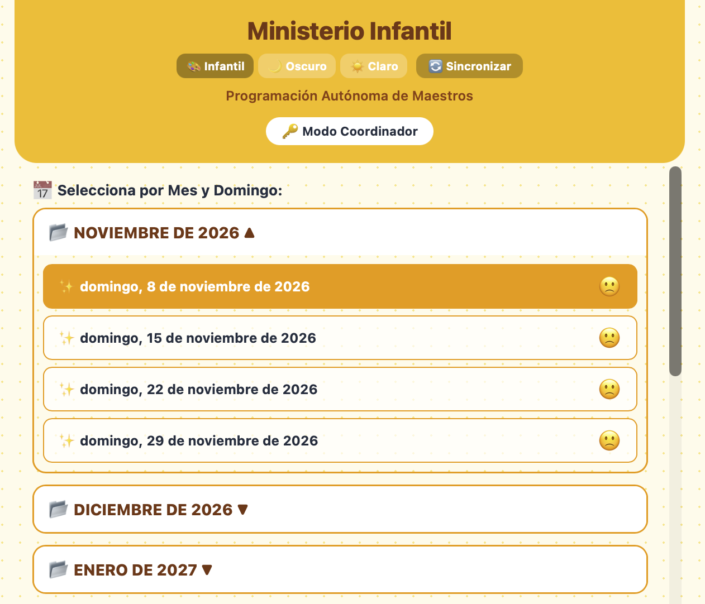

App 1
Ministerio Infantil
Plataforma interactiva y autónoma para la organización de turnos, clases, lecciones y recursos de los maestros.
- Gestión de domingos por meses
- Control por grupos de edad y roles
- Modo coordinador protegido